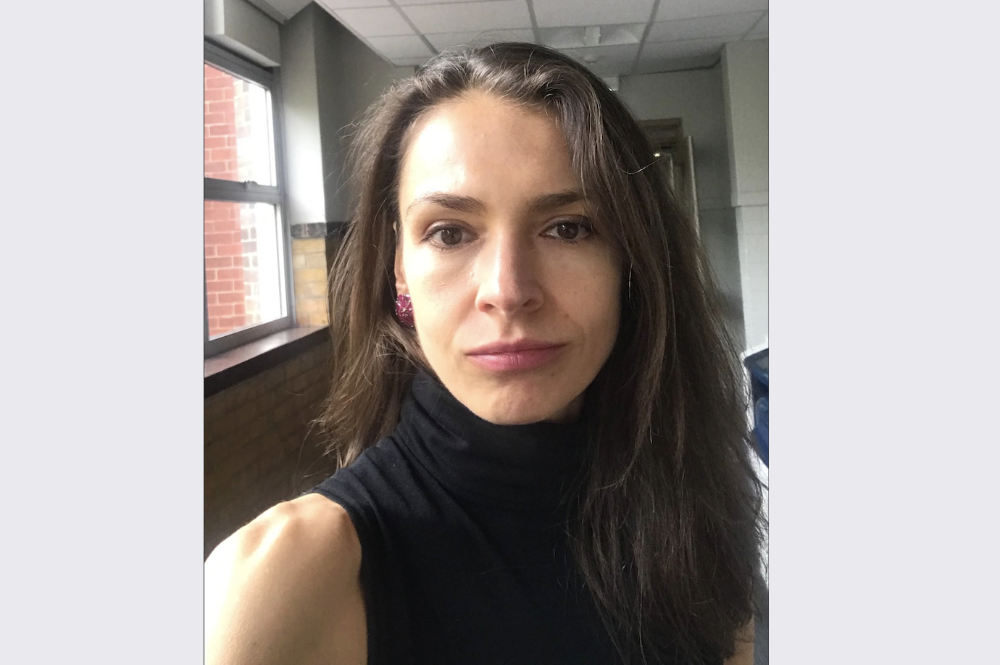

Maria Prokofieva, organizer of the Business Analytics and R Business User Group, spoke to the R Consortium last year about the Adoption of R by the Actuaries Community in Melbourne. Recently, Maria updated the R Consortium on the group’s focus, which has shifted towards business consultancy. The group provides a platform for graduate students to gain valuable industry experience and mentorship through various projects. The group is committed to ethical data governance and inclusive community building and prioritizes these values in all its initiatives.

Please share about your background and your involvement in the R Community.
My name is Maria Prokofieva. I work as a Leading ML Engineer at Mitchell Institute at Victoria University. I lead a stack of projects that use data to inform strategy and policy development. I am also an academic at the university, conducting research and teaching courses on ML/AI and data analysis. Through my work, I have the privilege of collaborating with various organizations, governments, and scholars to assist them in utilizing data to make decisions that impact the lives of many. I love open source, and what we see today is amazing – the world is changing. I have been a member of R and Python communities for many years, and seeing us grow is great.
How has your R User Group been doing since the last time we spoke?
The group has been performing well. As we grow, we focus on projects and become extremely busy with them. We already have a small community of people involved in different projects who also work together and communicate regularly. Once a month, we organize meetups where we present master classes—we moved to an in-person space but occasionally do online events. Our group has two main directions: business consultancy and business knowledge exchange.
We have been quite successful in building connections with bigger and smaller businesses interested in doing more data analysis. Some smaller businesses have staff who can perform their duties, and this is where community members have been fantastic.
The backbone of my community comprises my current and former Master’s students, who completed a course on business analytics. They are passionate about using R in everyday tasks and already possess some knowledge and experience, which they are happy to share. They are also interested in building connections and networking for their future jobs. This platform provides a mutually beneficial relationship for new students who get valuable industry experience through unpaid volunteering. These students receive mentorship from business leaders and senior software developers who share their programming knowledge and their knowledge of business negotiations and working with clients through the entire project life cycle.
We have been successful in working with cloud services such as AWS. We are actively exploring ways to automate data science on AWS and have several upcoming workshops where we will dive deeper into this topic. One workshop will focus on AWS Bedrock, where we will introduce non-technical business community members to employing large language models to perform their tasks. Our workshops focus on addressing specific problem-solving tasks rather than just the environment. We look into the business problems and how they can be solved.
It’s better to identify a problem and brainstorm solutions than to focus on tools. It’s fascinating to see how the community comes up with unique solutions to the problem. This approach is exactly what we need today, where no single preferred tool exists. Even if we use R Studio, we can easily integrate Python and other environments to accomplish the task. The focus should always be on the task guiding the process rather than the tools themselves.
Any recent project you have worked on using R?
Our recent project is based on utilising AWS Bedrock and GPT-4 to implement a Retrieval-Augmented Generation (RAG) system for a business. This system streamlines customer email communication using internal documents and company FAQs to auto-generate tailored responses. With some components there, we successfully integrated data analysis in R with Python implementation. We also have a few projects using open source models and integrating transformer models from Hugging Face. R is a star for any data-wrangling tasks and data visualizations!
What are your plans for the upcoming months?
One area of interest that we plan to focus on is the use of responsible AI and responsible practices. This is crucial not only for AI but also for any data management that we undertake. Responsible modeling and responsible data science are important concepts that need more attention. We have seen instances where people intentionally or accidentally manipulate statistics, and this needs to change. We must focus on being data governors and ensure our analysis is responsible. This includes managing the data and the application size, as well as ensuring continuity of work. Many packages are available, but maintaining and updating them is challenging. Our future work is to contribute to the community by ensuring the continuity of our packages so developers can rely on them.
What trends do you currently see in R language and your industry? Any trends you see developing in the near future?
Many people talk about large language models, but the focus is often on their applicability and use cases. While many amazing models are available, businesses need to see how they can be practically applied to their needs. It’s not just about text generation – image generation and other areas are also important. When we share the use cases with the businesses, the possibilities they haven’t considered often amaze them. Therefore, there is a growing demand for case studies demonstrating these models’ practical applications rather than just tutorials.
We focus on the practical applications of tools. Our approach is to identify a problem and explore various solutions. I’m not interested in specific software packages but in finding efficient solutions to problems. If there’s a new tool that can help me solve a problem more effectively, I’m open to learning about it and sharing my experience with others.
Any techniques you recommend using for planning for or during the event? (Github, zoom, other) Can these techniques be used to make your group more inclusive to people that are unable to attend physical events in the future?
The most important technique is interaction, networking, and keeping the connection alive among the group members. This is especially crucial when you have a larger proportion of new users in the group. It’s important to ensure that once they learn the skills, they understand that we are all busy and have business obligations to attend to. Therefore, it’s necessary to make sure that we keep the group relevant to all members, without getting carried away by our busy lives.
This is more about sitting together and engaging in problem-solving exercises, such as preparing for AWS certification. The group can help with other tasks, too, creating additional value beyond just learning. This is where the benefits of membership come in. Members are also motivated to give back to the community, as they can use their skills in real life, not just for learning purposes.
For instance, we have an AWS data practitioner interested in learning R. However, this is an opportunity for that person to share their expertise and contribute to the group. Similarly, we have a cybersecurity professional who is also interested in learning R. But this is an opportunity for them to present a use case on how machine learning can automate some of their tasks. They are also willing to share their knowledge, which may not have been considered. Therefore, it’s important to create a diverse experience for all members and engage with them in all possible ways. While it can be difficult to involve every group member, it’s crucial to understand their general interests and what’s important for them and focus on their professional development.
Take a moment to analyze where your members come from and their future plans and steps. Discuss their next career moves. It will be beneficial to provide networking opportunities where members can get referrals for job searches and advice for their next career move. These opportunities are quite important. Therefore, promotions should always be the end goal. You cannot become complacent or content with where you are because life is about growth and evolution.
How do I Join?
R Consortium’s R User Group and Small Conference Support Program (RUGS) provides grants to help R groups organize, share information, and support each other worldwide. We have given grants over the past four years, encompassing over 68,000 members in 33 countries. We would like to include you! Cash grants and meetup.com accounts are awarded based on the intended use of the funds and the amount of money available to distribute.